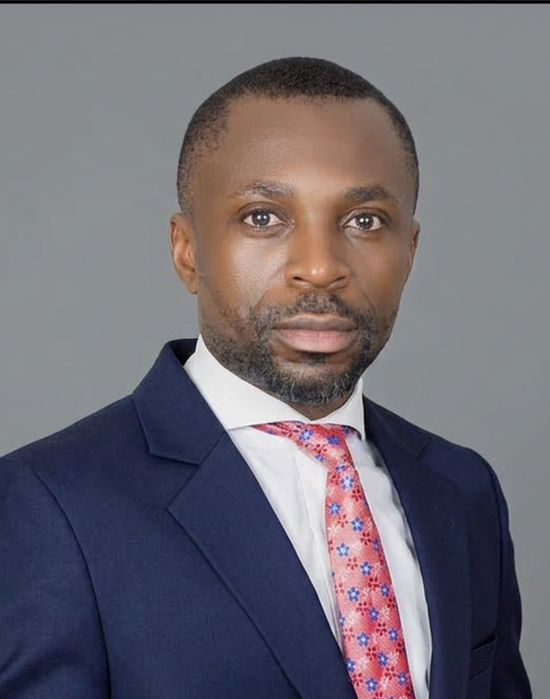
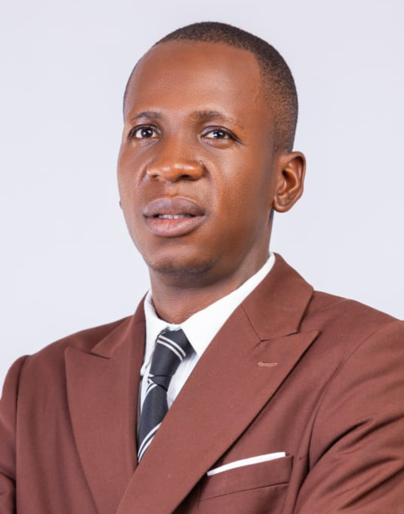
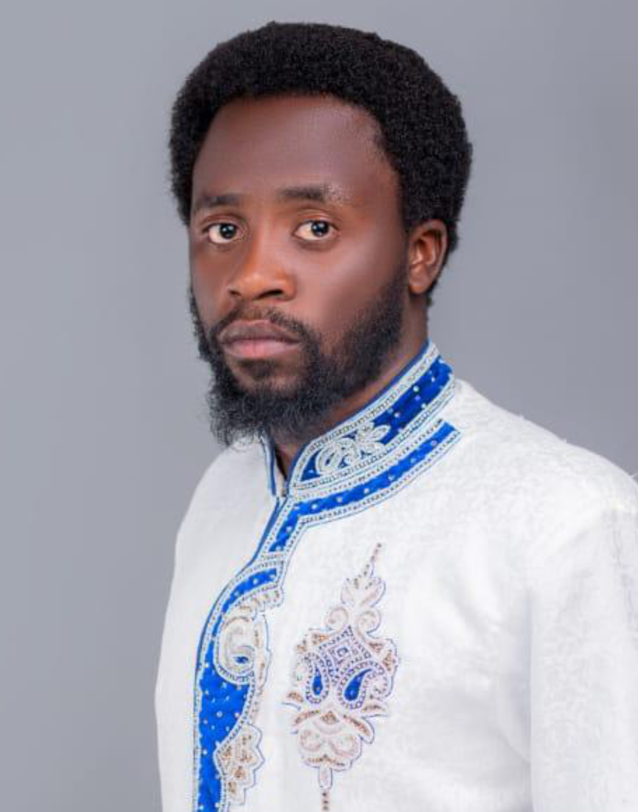
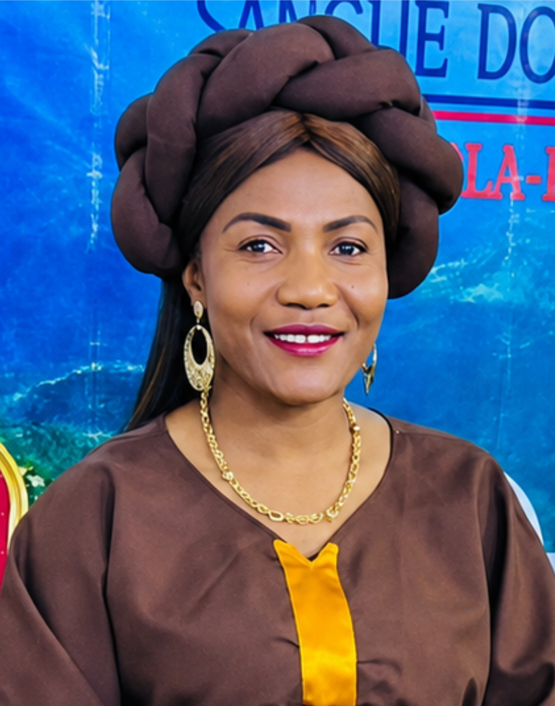

22 – 28 JUN 2026 • LUBANGO, HUÍLA • ANGOLA
O maior encontro de evangelismo de Angola. 7 dias de ensino, adoração, intercessão e evangelismo prático nas ruas.
APRENDE COM OS PREGADORES
O CEM reúne pregadores e líderes que estão na linha da frente do evangelismo em Angola e além-fronteiras.
DIA A DIA
Cada dia do CEM é desenhado para fortalecer a tua fé, equipar-te com ferramentas práticas e lançar-te na missão.
Iniciamos com um culto solene de consagração. Adoração, Palavra e Santa Ceia. O tom espiritual para toda a semana é estabelecido.
Mais info →Manhãs e tardes dedicadas ao ensino bíblico profundo sobre evangelismo, missões, liderança e discipulado.
Mais info →Continuação do ensino bíblico profundo. Temas sobre evangelismo, missões, liderança e discipulado.
Mais info →Último dia de sessões de ensino. Consolidação dos temas e preparação espiritual para os dias seguintes.
Mais info →Uma noite inteira dedicada à adoração profética e à intercessão pelas nações, por Angola e pelos campos missionários.
Mais info →O ponto alto do CEM. Todos os participantes saem às ruas, mercados, bairros e instituições para evangelizar o Lubango.
Mais info →Dia focado no envio missionário. Apresentação de campos, testemunhos e desafio. Ofertas missionárias.
Mais info →Culto de consagração e envio. Cada participante é comissionado para ser sal e luz onde quer que for. Grande final.
Mais info →PREGADORES
Cada voz no palco é selecionada pelo tema que pode entregar de forma única. Pregadores nacionais e internacionais alinhados com os desafios que a igreja angolana enfrenta hoje.

Fundador do CEM, pastor presidente da Igreja Getsêmani. Voz profética para a nação.
Referência no ensino bíblico e evangelismo em Angola.

Pela 2.ª vez na lista de pregadores do CEM. Dedicado com mais de 15 anos no ensino e ministério cristão.
Evangelista com ministério de impacto na juventude.
Uma voz dedicada ao ensino e expansão do Reino nas comunidades.
Líder influente com forte dedicação ao discipulado e missões locais.

Referência em evangelismo estratégico e plantação de igrejas.

Missionária experiente na mobilização para a causa de Cristo.
Voz atuante na liderança pastoral e no ensino bíblico aprofundado.
Dedicado ao ensino transformador e compromisso com missões locais.
DESTAQUES
Alguns dos melhores momentos das edições anteriores do CEM.
Pastor Mata Mourisca
Pastor João Luvumbo
Dra. Sílvia Mendes
IMPACTO
"Participar do CEM mudou a minha perspectiva sobre o evangelismo. Saí das muralhas da igreja e descobri que as ruas são o nosso altar."
"Nunca imaginei que um congresso pudesse ter um dia inteiro dedicado a evangelizar nas ruas. O CEM é prático, não é só teoria."
"Como pastor, o CEM renovou o meu fogo. Ver jovens a pregarem nas ruas com tanta ousadia encheu o meu coração de esperança para Angola."
"O CEM não é um congresso comum. É um mover de Deus. Todo cristão em Angola precisa viver esta experiência pelo menos uma vez."
"Participei online na 2.ª edição e senti-me tão envolvida como se estivesse lá. O ensino é profundo e o ambiente espiritual é palpável."
O LOCAL
O coração do CEM bate na Igreja Getsêmani, no Lubango, Huíla — um espaço de adoração que se transforma num centro de ensino, intercessão e envio missionário.
Google Maps →INSCRIÇÃO
Restam poucas vagas. Inscreve-te agora e sê parte deste mover.